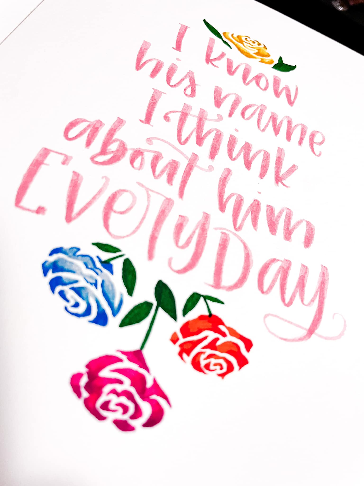
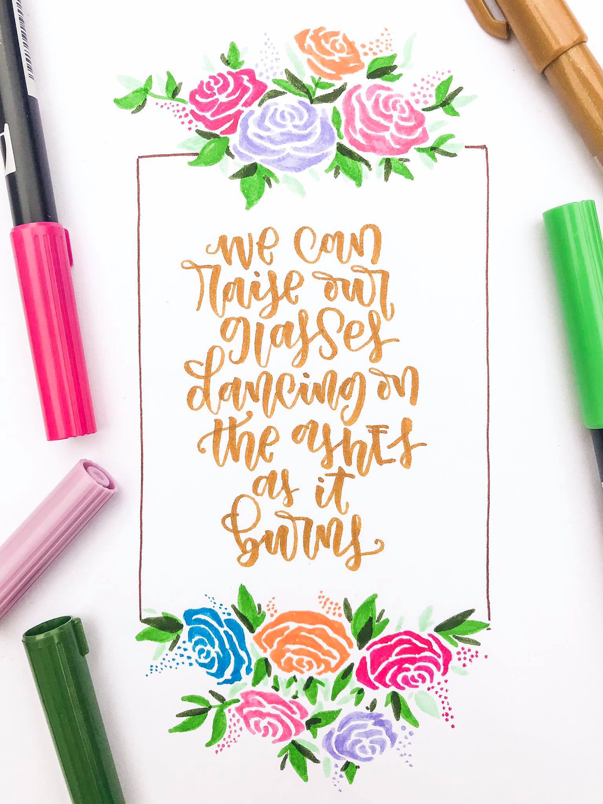
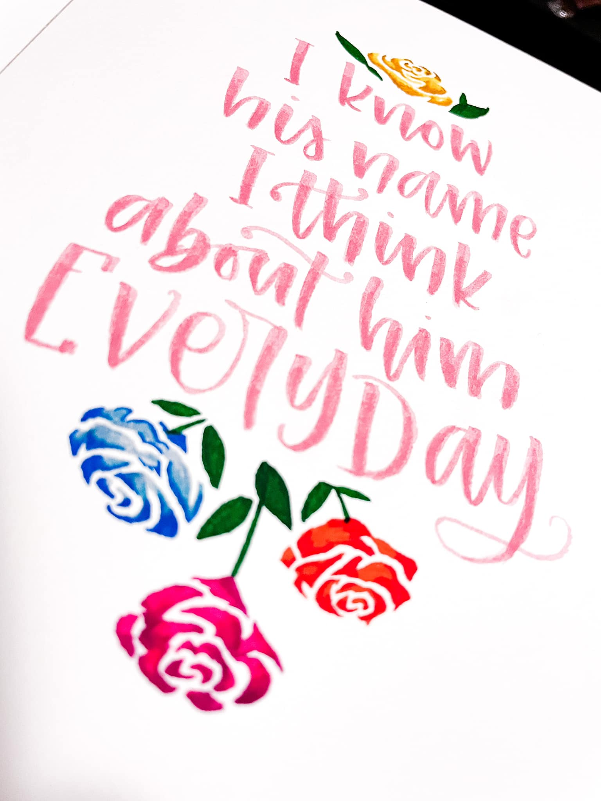
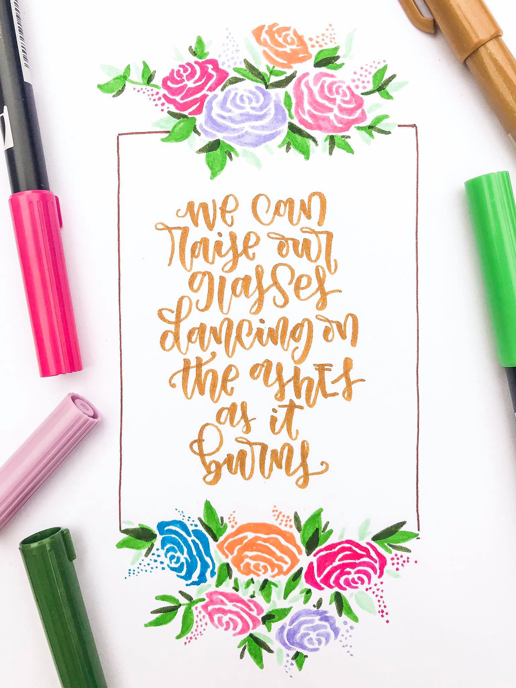

Calligraphy
This is a story of my journey to the world of penmanship and calligraphy.
At 2015, I was still fresh at my work as an IT consultant at an IT company. As far as I remember, we were having a meeting that included everyone in the team. I sat beside my colleague, who was also my batchmate at uni before, and she was doing a calligraphy. As curious as I was, I asked her what she was doing, and she explained to me the basics of the art and how she practiced to be where she was.
After I was astounded at her journey, I started to look at inspirations myself and I just kept writing and writing whenever I can. Below is a small gallery of artworks that I think are my best works as of July 2022.
 


